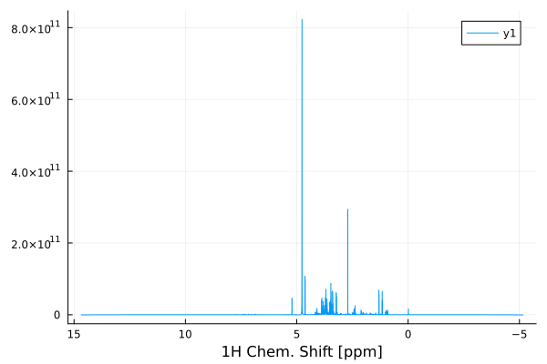
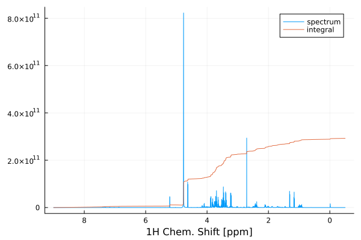
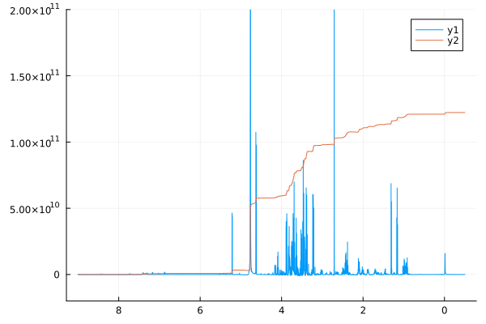

User Manual
Getting started
NMR.jl is a Julia package. It is installed using the Julia package management system:
import Pkg
Pkg.add(url="https://github.com/marcel-utz/NMR.jl")Once the install finishes, you are ready to go.
Loading NMR Data
To start processing, you need to load some NMR data. There are commands to load raw data from various spectrometer vendors. Typically, the data is loaded raw. This means that only the time-domain spectral data is returned, and you have to manually convert it to a data object that can be further processed.
The NMR.jl comes with example data that can be used to play with its functions. The data can be found through a dictionary in the module Examples:
import NMR
import NMR.Examples
data=Examples.Data["HCC cell culture media spectra"]Dict{String, Any} with 9 entries:
"name" => "HCC cell culture media spectra"
"format" => "Bruker"
"author" => "Evie Rogers"
"files" => ["/home/mu3q/Source/NMR.jl/src/../examples/2023-07-29 HCC cu…
"reference" => "unpublished"
"doi" => ""
"tags" => ["microfluidic NMR", "cells", "metabolomics"]
"description" => "^1H NMR experiments obtained from the supernatant of HCC ce…
"path" => "/home/mu3q/Source/NMR.jl/src/../examples/2023-07-29 HCC cul…We can read raw data from an "fid" file in this set as follows:
f=NMR.readBrukerFID(data["files"][1]*"/fid")32768-element Vector{ComplexF64}:
131.203125 - 181.21875im
-496.359375 + 908.015625im
431.1171875 - 274.828125im
-706.625 + 1392.2265625im
1086.328125 - 1282.7421875im
-1474.546875 + 2338.7421875im
2038.015625 - 2740.5im
-2732.1015625 + 4055.1171875im
3593.5078125 - 5045.671875im
-4740.96875 + 6741.3984375im
⋮
-283007.765625 - 183694.90625im
-420138.875 + 79240.765625im
-175130.375 + 254453.578125im
-25309.578125 + 487678.984375im
0.0 + 0.0im
0.0 + 0.0im
0.0 + 0.0im
0.0 + 0.0im
0.0 + 0.0imfreturns an array with the complex data points contained in the fid file. To convert this to useable time-domain data, you need to convert it into a Data1D object.
Bruker NMR systems store the acquisition parameters in a separate file, which we can read into a Julia dictionary as follows:
acqus=NMR.readBrukerParameterFile(data["files"][1]*"/acqus")Dict{String, Any} with 235 entries:
"O4" => 4323.3
"PCPD" => [0, 80, 0, 0, 0, 0, 0, 0, 0, 0]
"PLWMAX" => Real[137.28, 0, 0, 0, 0, 0, 0, 0]
"PQSCALE" => 1
"TE" => 298.0
"FQ5LIST" => "<>"
"RECPRE" => [-1, 0, -1, -1, -1, -1, -1, -1, -1, -1 … -1, -1, -1, -1, -1, …
"VPLIST" => "<>"
"VCLIST" => "<>"
"O7" => 4323.3
"FL3" => 0
"FQ6LIST" => "<>"
"SW_h" => 13888.9
"DATATYPE" => "Parameter Values"
"RSEL" => [0, 1, 0, 0, 0, 0, 0, 0, 0, 0 … 0, 0, 0, 0, 0, 0, 0, 0, 0, 0]
"CNST" => [1, 1, 1, 1, 1, 1, 1, 1, 1, 1 … 1, 1, 1, 1, 1, 1, 1, 1, 1, 1]
"USERA4" => "<>"
"YMAX_a" => 6.494e8
"SPOFFS" => [0, 0, 0, 0, 0, 0, 0, 0, 0, 0 … 0, 0, 0, 0, 0, 0, 0, 0, 0, 0]
⋮ => ⋮To convert the raw fid data into a Data1D object which we can process, we need some of these parameters. The time step between subsequent points in the FID is given by the inverse of the spectral width. Moreover, Bruker FIDs actually begin before $t=0$. We have to remove these points:
dwellTime=1/acqus["SW_h"]
f=f[74:end]
d=NMR.Data1D(f,0.0,length(f)*dwellTime)
NMR.plot(real(d))
To convert the time-domain data into a spectrum, we use NMR.FourierTransform. By default, FourierTransform interprets the time domain in the Data1D object in seconds, and produces another Data1D object with a horizontal axis in Hz:
import Plots
spect=NMR.FourierTransform(d)
Plots.plot(real(spect),xaxis=:flip,xlabel="frequency [Hz]")
To obtain a spectrum with a horizontal axis in ppm chemical shift, we have to indicate the conversion. This is done by giving the number of Hz per ppm as a parameter. In our case, the spectrum was acquired on a 700 MHz spectrometer. One ppm therefore corresponds to 700 Hz. The precise factor is contained in the Bruker parameter "SFO1". Also, we can calibrate the horizontal axis by indicating the chemical shift at the centre of the spectrum:
import Plots
spect=NMR.FourierTransform(d,PPM=acqus["SFO1"],CTR=4.76)
Plots.plot(real(spect),xaxis=:flip,xlabel="1H Chem. Shift [ppm]")
Phase Correction
The above spectrum still shows artefacts. To clean it up, we need to correct the phase. This can either be done manually, by supplying PH0and PH1 arguments to FourierTransform, or we can resort to automatic phase correction:
spect = NMR.AutoPhaseCorrectChen(spect)
Plots.plot(real(spect),xaxis=:flip,xlabel="1H Chem. Shift [ppm]")
Cutting Regions
The above spectrum covers a wide range without any signals, which is of no interest. We can chop out the central, important part:
s2=NMR.cut(spect,-0.5,9.0)
Plots.plot(real(s2),xaxis=:flip,xlabel="1H Chem. Shift [ppm]")
Computing Integrals
In Chemistry, it is customary to show the integral of the spectral signal along with the spectrum. This makes the intensity of the peaks directly visible as a step height for each signal. The integrated spectrum can be computed like this:
intSpect = NMR.integrate(s2)
Plots.plot(real(s2),xaxis=:flip,xlabel="1H Chem. Shift [ppm]",label="spectrum")
Plots.plot!(20*intSpect,label="integral")
Baseline Correction
In the above plot, it can be seen that the integral line has regions where it decreases from left to right. This results from corresponding regions in the spectrum that have negative baseline intensity. The baseline of the NMR spectrum, while visually quite acceptable, is numerically not perfectly adjusted. The baseline of the real part of the spectrum can be computed as follows:
Plots.plot(s2,xaxis=:flip)
Plots.plot!(NMR.medianBaseline(real(s2),wdw=512),linewidth=4.0,ylims=2.0e10*[-1,10])
With this baseline is subtracted from the spectrum before integration, a much cleaner integral curve is obtained:
spectBc = real(s2)-NMR.medianBaseline(real(s2),wdw=512)
Plots.plot(spectBc,xaxis=:flip)
intSpect = NMR.integrate(spectBc,flip=true)
Plots.plot!(20*intSpect)
Detecting Peaks
The locations, heights, and widths of the peaks in the spectrum can be automatically detected using the NMR.peaks() function. It returns a data structure that contains all relevant information:
pks=NMR.peaks(spectBc,threshold=1e2)PeakStruct([1.1380672291543599, 1.1536311877594196, 1.1887296664349931, 1.3058264578483298, 1.320627812692291, 1.9023050626588194, 2.1059646891689066, 2.126452805066127, 2.1170973743969177, 2.123384262361432 … 4.620959161313078, 4.6323043756243445, 4.756159746534709, 4.6511411132838605, 4.643325188979032, 4.659514429167915, 4.765018663696854, 5.215049847868962, 5.193851461792476, 6.8614529337881764], [-4.288842507924498e10, -1.6692441492462576e10, 1.0569225653086498e9, 4.1710296908476477e9, 7.508404564145939e9, 1.1468473086700516e9, 1.0782056783911326e9, 6.9740843492121315e9, 4.704587298782548e9, 4.354329696317519e9 … 3.408058008272461e10, 3.308509792699822e10, 6.124945819747406e9, 2.375043749718312e9, 2.4211371540919447e9, -2.8739098804952126e9, 6.455034667912031e11, 2.4144731196471825e10, 5.135645770351668e10, 5.978468299606018e8], [4.929521784460716e13, 3.161666800962663e13, 1.0758537565076729e13, 1.6763253773307458e15, 2.1584534146970675e14, 1.965525049717817e13, 1.665573752909892e14, 2.8621449315232062e13, 1.6470540824274738e14, 5.6339796785537195e13 … 1.5368607105683535e15, 1.4731247818500448e15, 3.239578345288008e11, 7.315851280378887e12, 1.1179128935757734e12, 2.2114797221077812e12, 2.3843887603726692e16, 2.0732832146391362e14, 7.650787105013405e13, 1.778956769050126e13], [-9.215561079268705e8, -2.356716357048752e9, 1.6741582666039333e8, 1.8898635018757195e9, 1.0721170636996893e10, 3.553509645730038e8, 2.5869579108422074e8, 2.4333031778201046e9, 4.882728875645918e9, 6.666194744299592e9 … 7.168241627096896e10, 6.970230848674896e11, 3.3721963402742953e9, 1.4404119866763525e9, 2.2147703884141907e8, 6.44108477290768e8, 1.059755611729516e13, 3.627151291745451e8, 1.00674437181614e7, 4.208568711101902e8], Data1D{Vector{Float64}, Float64}([4682.357178895561, 4683.7114350907505, 4685.066300981429, 4686.421776945439, 4687.777863360933, 4689.134560606345, 4690.491869060412, 4691.849789102159, 4693.208321110911, 4694.567465466285 … 3947.7205198600655, 3946.697934487497, 3945.6757528652165, 3944.653974776815, 3943.632600006021, 3942.611628336718, 3941.5910595529326, 3940.570893438842, 3939.551129778772, 3938.5317683571952], -0.5000239657162449, 9.000056231678986))This information can then be used for further analysis, for example for comparison with a database, or for plotting. Here is an example:
Plots.plot(pks.deconvolution,xaxis=:flip,xlims=[2.9,4.1],ylims=6.0e11*[-1,10],label="deconvolution",yaxis=false,grid=false,legend=Symbol(:outer,:bottomright),minorticks=true,xlabel="1H Chem. Shift [ppm]")
Plots.plot!(spectBc+2.0e12,label="spectrum")
Plots.plot!(pks.positions,5.5e12*ones(length(pks.positions)),seriestype=:scatter,marker=:vline,label="peaks")